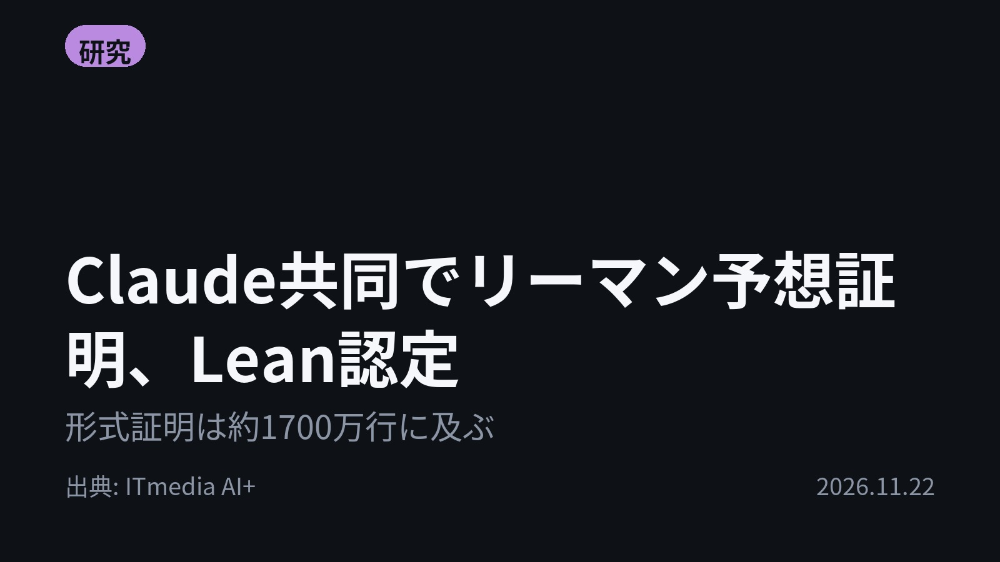
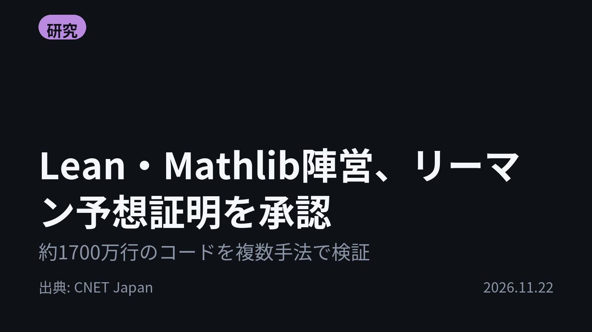
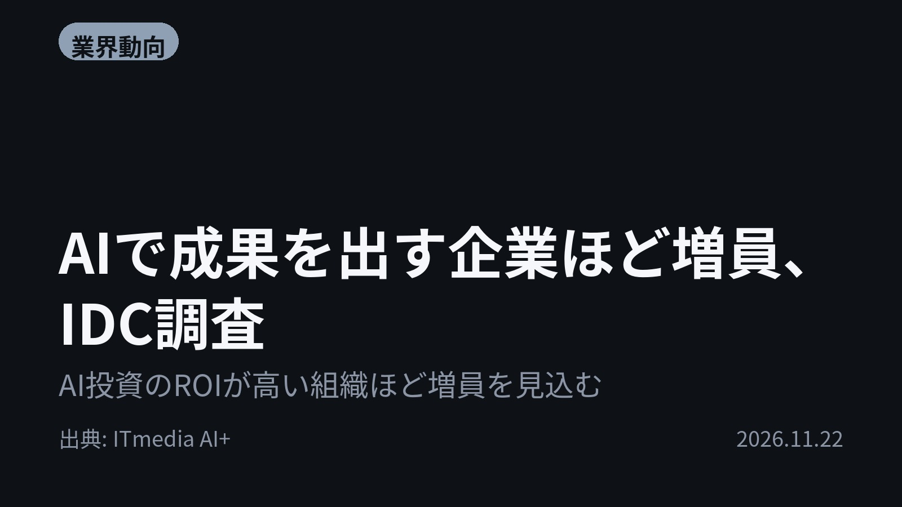
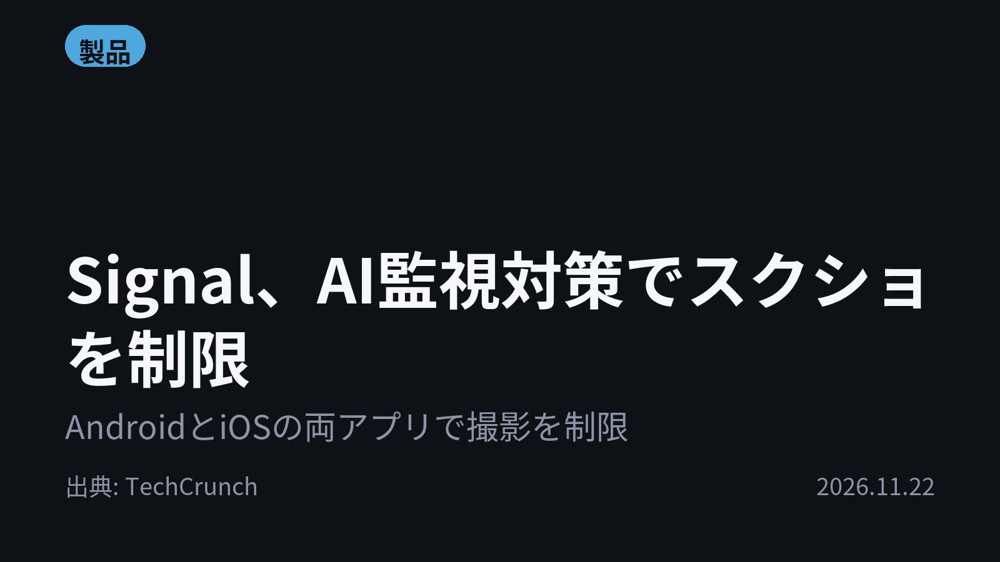
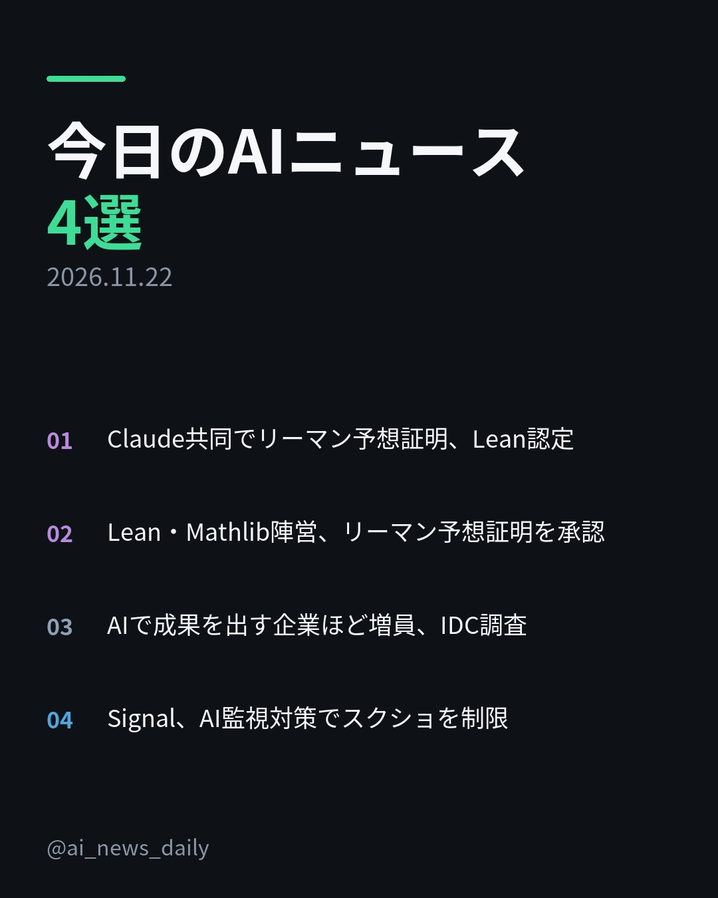
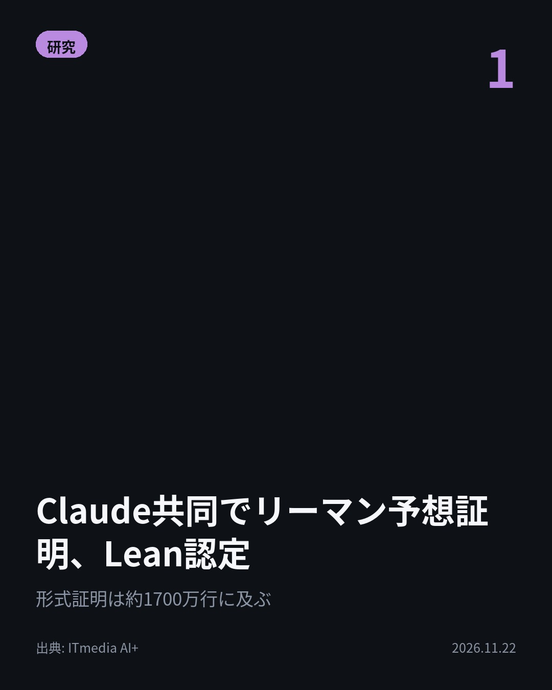
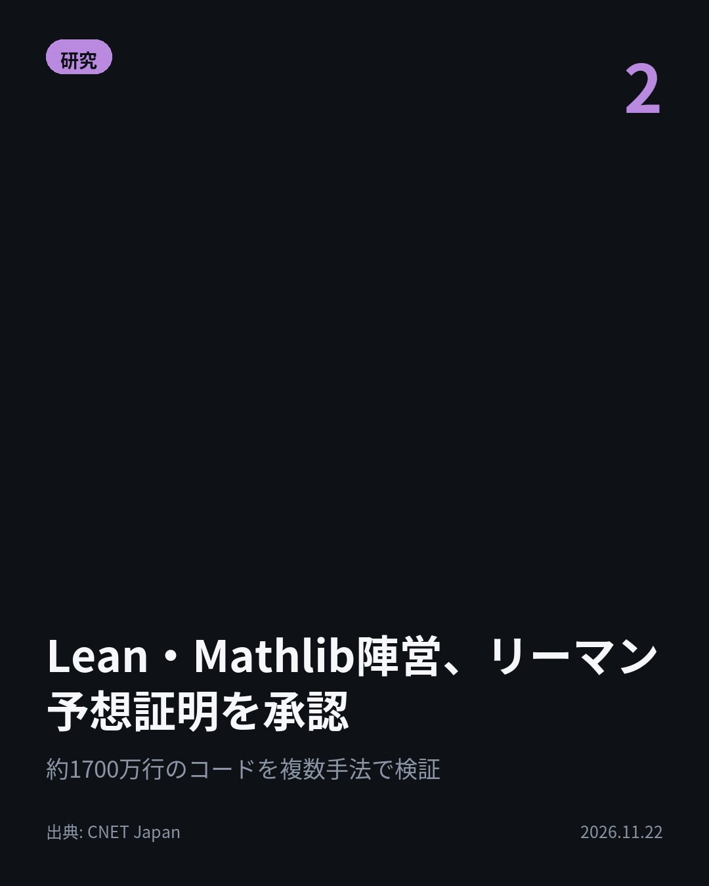
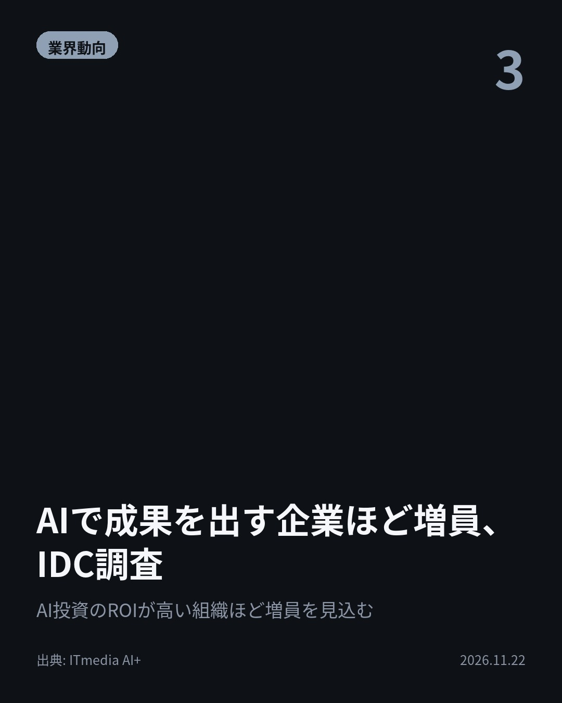
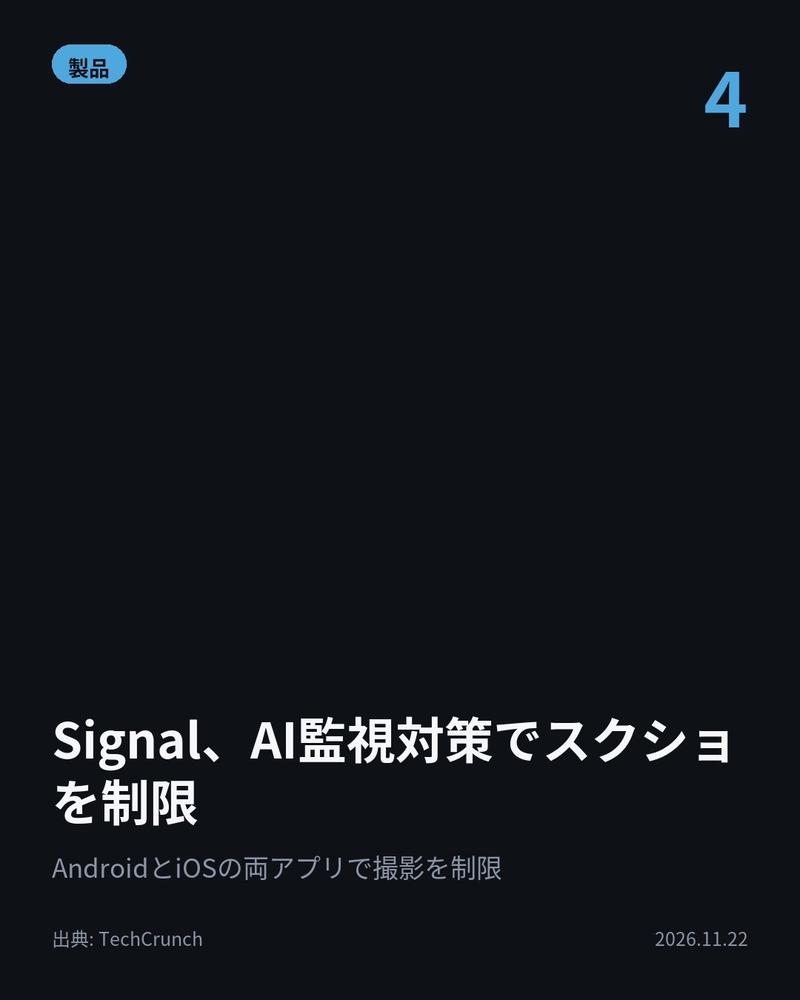

今日のAIニュース 下書き
2026-11-22 生成 11/23 21:14
⚠ ファクト照合で要確認の項目があります。
各ニュースの警告を確認してから投稿してください。
X（4投稿）
Claude共同でリーマン予想証明、Lean認定
原題: Anthropicの数学者、「Claude」と共同で「リーマン予想」を証明したと主張 Leanコミュニティが「正しい」と認定

形式証明、1700万行。 Anthropicの数学者アルポーゲ氏が、Claudeと共同でリーマン予想の証明を発見したと発表。 Leanで記述した証明を公開し、Leanコミュニティが複数の検証を経て「正しい」と認定。 #AI #Claude（出典: ITmedia AI+）
重み 218 / 280（見た目 133字）
要確認:
［固有名詞］ITmedia — この語が本文に見つかりません

Lean・Mathlib陣営、リーマン予想証明を承認
原題: リーマン予想の証明、Lean開発者らが「正しい」と声明 Claudeを使って発見

リーマン予想の証明は「正しい」。 LeanとMathlibの開発コミュニティーが11月21日、共同声明を出した。 Claudeを使った証明の約1700万行のコードを複数の方法で検証し、予想そのものの証明だと確認。 #生成AI #Lean（出典: CNET Japan）
重み 219 / 280（見た目 131字）
要確認:
［固有名詞］CNET — この語が本文に見つかりません
［固有名詞］Japan — この語が本文に見つかりません

AIで成果を出す企業ほど増員、IDC調査
原題: AIで成果を出す企業ほど「人を増やす」？ “通説”を否定する調査結果をIDCが発表

AIで人が減る。その通説と食い違う調査が出た。 IDCによると、AI投資で高いROI（投資対効果）を得ている組織ほど、今後の増員を見込む割合が高い。 #AI #IDC（出典: ITmedia AI+）
重み 167 / 280（見た目 98字）
要確認:
［固有名詞］ITmedia — この語が本文に見つかりません

Signal、AI監視対策でスクショを制限
原題: Signal restricts mobile screenshots as it confronts ‘existential threat’ of AI surveillance

Signalはなぜ、スクショを制限するのか。 AndroidとiOSの両アプリで、ユーザーがスクリーンショットを撮る機能を制限。 Signalが「存在に関わる脅威」と見る、AIによる監視への対応だ。 #AI #Signal（出典: TechCrunch）
重み 204 / 280（見た目 124字）
要確認:
［固有名詞］スクショ — この語が本文に見つかりません
［固有名詞］スクリーンショット — この語が本文に見つかりません
［固有名詞］TechCrunch — この語が本文に見つかりません

Instagram（カルーセル 6枚）


1. 表紙


2. ニュース


3. ニュース


4. ニュース


5. ニュース

6. CTA
リーマン予想の証明を、Leanコミュニティが「正しい」と認定。検証された形式証明は約1700万行。 さらに「AIで人が減る」通説と食い違うIDCの調査、Signalのスクショ制限まで。 1. 証明を見つけたのは、Anthropicの数学者レベント・アルポーゲ氏とClaude。 証明支援系Leanで記述した1700万行の形式証明を公開し、Leanコミュニティが複数の検証を経て共同声明を出しました。(ITmedia AI+) 2. 声明を出したのは、Lean（数学の証明をコンピューターで検証するプログラミング言語）と数学ライブラリー「Mathlib」の開発コミュニティー。 11月21日、約1700万行のコードを複数の方法で検証し、リーマン予想「そのもの」を証明していると確認しました。(CNET Japan) 3. IDCの調査では、AI投資で高いROI（投資対効果）を得ている組織ほど、今後の増員を見込む割合が高いという結果に。 「AIが普及すれば人員は減る」という通説と食い違うデータです。(ITmedia AI+) 4. Signalが、AndroidとiOSの両アプリでスクリーンショットの撮影を制限。 AIによる監視を「存在に関わる脅威」と捉えての対応です。(TechCrunch) 数学の証明から企業の人員、メッセージアプリのプライバシーまで、AIをめぐる動きが幅広く並んだ4本でした。 毎朝4本、AIニュースの要点をまとめています。見逃したくない方はフォロー、あとで読み返すなら保存をどうぞ。 #AI #生成AI #人工知能 #テクノロジー #AIニュース #ArtificialIntelligence #Tech #Claude #Anthropic #AI活用 #数学 #Math #リーマン予想 #RiemannHypothesis #Lean #Mathlib #形式検証 #IDC #AI投資 #Signal #プライバシー #Privacy
842字（Instagram上限 2,200字）
この日の選定理由
Claude共同でリーマン予想証明、Lean認定
数学最大級の未解決問題がAIとの共同作業で解かれ、形式検証で正しさまで確認されたとされる。AIが研究の発見そのものを担う段階に入ったことを示す出来事です。
Lean・Mathlib陣営、リーマン予想証明を承認
証明が正しいことを、人による査読ではなく形式検証のコミュニティが保証した。AI時代の数学で、正しさをどう確かめるかの新しい形を示しています。
AIで成果を出す企業ほど増員、IDC調査
「AIで人が減る」という通説に反するデータが出た。AI導入は人員削減の手段より、事業拡大の手段として効いている可能性があります。
Signal、AI監視対策でスクショを制限
画面を読み取るAIを、Signalは秘匿通信アプリにとって「存在に関わる脅威」と見ている。プライバシー保護の考え方が端末側のAIまで広がり始めています。